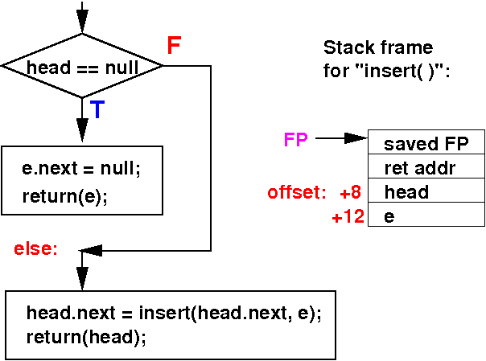

I created an initial list using the .4byte directive:
head: .word p0 // head contains the address of the first list elem
// head->[11]->[22]->[33]->[44]->[55]
// list structure is: [int value, next]
p0: .4byte 11, p3 // p0 contains [11, p3]
p1: .4byte 33, p2 // p1 contains [33, p2]
p2: .4byte 44, p4 // p2 contains [44, p4]
p3: .4byte 22, p1 // p3 contains [22, p1]
p4: .4byte 55, 0 // p4 contains [55, 0]
|
I created a list element using the .4byte directive:
ptr: .word p9 p9: .4byte 99, 0 // p9 contains [99, 0] |
We will insert (at tail) the list element pointed to by ptr into the linked list that start at head
The main program calls: head = Insert(head, ptr):
main:
// head = Insert( head, ptr );
// Pass parameter 2 (ptr) to Insert
movw r0, #:lower16:ptr
movt r0, #:upper16:ptr // r0 = addr(ptr)
ldr r0, [r0] // r0 = ptr
push {r0} // Pass ptr using stack
// Pass parameter 1 (head) to Insert
movw r0, #:lower16:head
movt r0, #:upper16:head // r0 = addr(head)
ldr r0, [r0] // r0 = head
push {r0} // Pass head using stack
bl Insert
add sp, sp, #8 // Clean up parameters
// Store return value in head
movw r1, #:lower16:head
movt r1, #:upper16:head // r1 = addr(head)
str r0, [r1]
Stop:
nop
|
DEMO: /home/cs255001/demo/asm/9-list-recursion/ARM-Insert.s
We will write the simplified version that does not have any local variable:
public static List insert( List head, List e )
{
/* --------------------------------------------
Base case: insert at the tail of an empty
-------------------------------------------- */
if ( head == null )
{
e.next = null; // Mark e as the last list elem
return(e); // e is the first list elem !
}
else
{
/* ===========================================================
Solve the problem USING the solution of a smaller problem
=========================================================== */
head.next = insert( head.next, e ); // Link directly to helpSol
return head; // Return MY solution
}
}
|
The stack frame constructed for the Insert function is as follows:
Stack frame of the Insert( head, e ) method:
SP
FP -----> +---------------------+
| saved frame pointer |
+---------------------+
| Return Address |
+---------------------+
| head | addr(head) = FP + 8
+---------------------+
| e | addr(e) = FP + 12
+---------------------+
|
Flow chart and stack frame structure for the insert( ) function: 
The Insert(head, p) function in ARM assembler:
Insert:
/* =============================
Prelude: build stack frame
============================= */
push {lr}
push {fp}
mov fp, sp
sub sp, sp, #0 // No local variables
// if ( h == null )
ldr r0, [fp, #8] // r0 = h
cmp r0, #0
bne else
// e.next = null
mov r0, #0 // r0 = null
ldr r1, [fp, #12] // r1 = e
str r0, [r1, #4] // e.next = null
// return e
ldr r0, [fp, #12] // r0 = e (return value)
b postLude
else:
// h.next = Insert( h.next, e );
//// pass e
ldr r0, [fp, #12] // r0 = e
push {r0} // Pass e with stack
//// pass h.next
ldr r0, [fp, #8] // r0 = h
ldr r0, [r0, #4] // r0 = h.next
push {r0} // Pass h.next with stack
bl Insert
add sp, sp, #8 // Clean up 2 parameters
//// Assign return value (in r0) to h.next
ldr r1, [fp, #8] // r1 = h - can't use r0!!
str r0, [r1, #4] // h.next = Insert(h.next,e)
// return( h );
ldr r0, [fp, #8] // r0 = h (return value)
postLude:
// Postlude - clean up and return to caller
mov sp, fp
pop {fp}
pop {pc}
|
DEMO: /home/cs255001/demo/asm/9-list-recursion/ARM-Insert.s